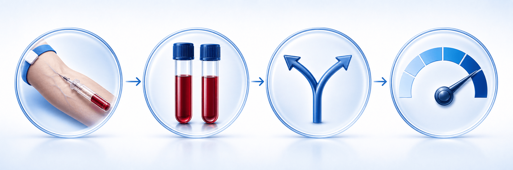
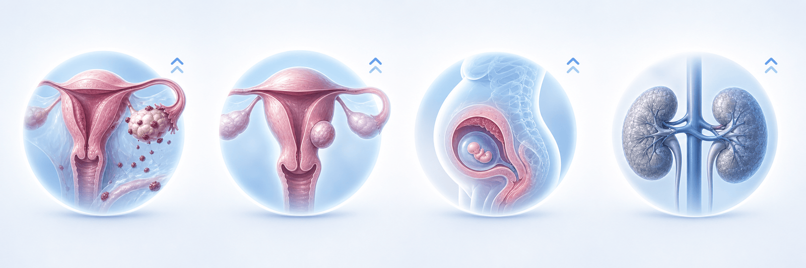
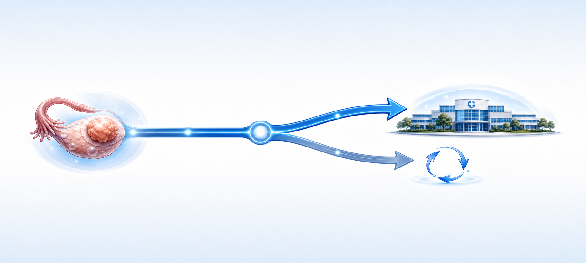

ROMA 난소암 위험도 검사,
확진이 아니라 "위험도를 가려주는" 검사입니다
ROMA (Risk of Ovarian Malignancy Algorithm) — 이미 발견된 난소 혹이 수술해서 봤을 때 암일 가능성이 높은 편인지를 미리 가늠해, 부인암 전문병원으로 보낼지 판단(triage)하는 혈액검사입니다
ROMA 검사란 — 한눈에 보기
한 번 채혈로 두 가지 표지자와 폐경 상태를 합쳐 위험도 점수(%)를 계산합니다
두 혈액 표지자 측정
(대개 금식 불필요)
→ 고위험 / 저위험 분류
검사 원리 — 무엇을, 어떻게 계산하나
HE4 · CA-125 · 폐경 상태를 수학식에 넣어 위험도 점수(%)를 산출합니다

팔에서 피를 한 번 뽑아 HE4와 CA-125를 측정하고, 폐경 전·후에 따라 서로 다른 계산식에 넣어 위험도 점수(%)를 냅니다.
두 표지자는 서로의 약점을 보완합니다 — CA-125는 대표적인 난소암 표지자이지만 양성 질환에서도 잘 오르고, HE4는 양성 질환에 덜 흔들립니다. 그래서 둘을 함께 보고 폐경 상태까지 반영하면 단독 검사보다 양성·악성 구별이 좋아집니다. 다만 점수는 그 자체로 진단이 아니며, 반드시 초음파·CT 같은 영상과 진찰을 함께 보고 판단합니다.
두 표지자 — CA-125와 HE4
각자 약점이 있어 단독으로는 부족하지만, 함께 보면 서로를 보완합니다
- 대표적인 난소암 표지자 — 상피성 난소암의 80% 이상에서 상승
- 복막·흉막·자궁내막에서도 만들어집니다
- 월경·임신·자궁내막증·근종·골반염·복수·심부전 등에서도 오름
- 특히 폐경 전에는 양성 상태로 위양성이 많은 편
- 단독으로는 양성·악성 구별이 충분치 않음
- 양성 질환에 덜 흔들려 CA-125를 보완
- 자궁내막증·근종 같은 양성 상태에서 비교적 안정적
- 단, 콩팥기능 저하·고령·흡연에서는 상승할 수 있음
- 임신 중에는 오히려 낮아지는 경향
- HE4 역시 단독 진단은 불가 — CA-125와 함께 해석
누구에게 · 언제 · 어떻게 하나
이미 발견된 난소 혹의 악성 가능성을 분류하기 위한 검사입니다 — 조기검진용이 아닙니다
결과 읽는 법 · 시약별 기준값(cut-off)
0~100% 점수에서 기준값을 넘으면 고위험 — 기준값은 장비·시약(Roche / Abbott)마다 다릅니다
점수가 높으면 암인가요? — 위험도 vs 확진
고위험이 곧 암 확진은 아니며, 저위험이 100% 안심도 아닙니다 — 성능은 범위로 봅니다
(연구마다 범위로 나타남)
(연구마다 범위로 나타남)
(AAFP 2023)
암이 아닌데 표지자가 오르는 경우
아래 상황들에서 CA-125 등이 올라 점수가 높게 나올 수 있어, 미리 알려주시면 해석에 도움이 됩니다

고위험으로 나오면 — 다음 단계
고위험은 "전문병원으로 보낼지 판단하는 신호"입니다 — 다음 순서로 진행합니다

스크리닝 아님 · 검사 전후 주의
용도를 정확히 알고, 검사 전 알릴 것과 검사 후 해석 원칙을 지키면 가장 도움이 됩니다
ROMA는 무증상 일반 여성의 조기검진(스크리닝) 도구가 아닙니다. 제조사·허가 모두 단독 진단·선별 용도를 금지합니다.
용도는 이미 발견된 혹의 위험도 분류입니다. 조기검진·단독 확진·치료 후 추적 목적이 아닙니다. 검사 전에는 임신 가능성·생리 주기·부인과 병력(자궁내막증·근종)·콩팥 질환·흡연 여부를 알려주세요. 검사 후에는 수치 하나로 판단하지 말고 영상·진찰·임상 경과와 함께 종합해 해석하며, 다른 병원/시약의 값과 단순 비교하지 않습니다. 최종 진단은 수술·조직검사로 확인합니다.
오늘 꼭 기억할 핵심 8가지
ROMA 검사를 바르게 이해하고 활용하기 위한 환자 핵심 정리
점수 하나가 아니라,
영상·진찰과 함께 안전하게 판단합니다
"이 검사는 암을 확정하는 검사가 아니라, 가능성이 높은 편이면 처음부터 난소암을 전문으로 보는 병원에서 수술받으시도록 안내하기 위한 거예요. 궁금한 점은 언제든 문의해 주세요."
광교중앙로 298, 4층
토요일 08:30~13:30
같은 자료를 다시 볼 수 있어요